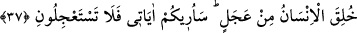

edinmişlerdir. Nitekim Allah Teâlâ şöyle buyurmuştur: “Hevâ ve hevesini ilah edinen
kimseyi gördün mü?” (el-Câsiye, 45/23) Her seven sevdiğini kıskanır. Onun için
müşrikler onların ayıp ve noksanlarını dillerine dolarlar. Halbuki ayıp ve kusur,
zıtlarında değil onlardadır.
Mesnevî’de der ki:
Birisi ağzını eğdi, Muhammed’in adını eğlenerek andı
Kendi ağzı bu sebepten çarpıldı kaldı
Geri geldi ve “Ey Muhammed affet
Sen ki ledün ilminden lütuflar aldın
Ben, bilgisizlikten eğlendim seninle
Oysa eğlenmeye müstahak olan bendim”
Allah, bir kimsenin perdesini yırtmak isterse
Onu temiz kişileri kınayıp yermeye meylettirir
Ve eğer Allah bir kimsenin ayıbını örtmek isterse
Ayıplı kimselerin ayıbı hakkında onun sesini soluğunu keser
Akıllı kişiye gereken, dilini başkalarının kusûrlarını anmaktan korumak ve her zaman
gaybları çok iyi bilen Allâh’ı anmakla meşgul olmaktır. Çünkü O, sonsuz rahmetini
kullarının üzerine yağdırmıştır. Elbette nimeti verene şükretmek lâzımdır.
Bir hadiste şöyle buyrulmuştur: “Kim Allâh’ı itâatle anarsa, Allah da onu rahmetle
anar. Kim de Allâh’ı isyân ile anarsa, Allah da onu lânetle anar. Zikrin en üstün
olanı, “Lâ ilâhe illallah”tır.”[169] Çünkü Lâ ilâhe illallah, Allah’tan başka her şeyden
yüz çevirmek ve tamâmen Allâh’a yönelmektir. Denilir ki: Kelime-i tevhîdin ilk yarısı
“O halde Allâh’a koşun/kaçın.” (ez-Zâriyât, 51/50) âyetine, ikinci yarısı ise “Allah”
de, sonra bırak onları, daldıkları bataklıkta oynayadursunlar.” (el-En‘âm, 6/91)
âyetine işârettir.
Yine denilir ki: Diğer ibadetler ve zikirler Allâh’a melek vâsıtasıyla ulaşır. Bu kelime
ise Allâh’a melek vâsıta olmadan ulaşır. Kim hâlis bir niyetle Lâ ilâhe illallah derse,
denizlerin köpüğü kadar günahı da olsa affolunur. Allah Teâlâ bütün peygamberlere,
ümmetlerini bu zikre çağırmalarını emretmiştir. Lâ ilâhe illallah’tan daha üstün bir zikir
nâzil olmamıştır. Gökler ve yerler onun sâyesinde durur. O, İslâm olmanın ifâdesi,
kurtuluş ve nur kelimesidir. Çünkü bâtın onun sâyesinde ihlâs, sıdk, safâ ve yakîn nurları
ile aydınlanır.
37. İnsan, aceleci (bir tabiatta) yaratılmıştır. Size âyetlerimi göstereceğim;